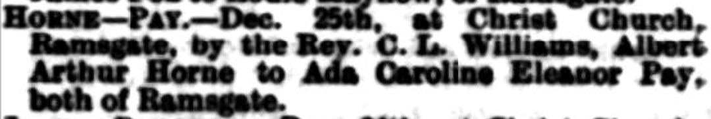

Ada Caroline Eleanor Horne (née Pay) 1889 - 1965
[ Home ] | [ Calendar ] | [ Surnames Index ] | [ Errors ] | [ Family History ]Ada Pay, the wife of Arthur Albert Horne (the first cousin three-times-removed on the father's side of Nigel Horne), was born in Ramsgate, Kent, England on 3 Apr 18891,2,3,4, was baptised there at Christ Church on 1 Dec 1889 and also married Arthur (a smack owners's assistant with whom she had 8 children: Arthur Herbert, May Winifred, Phyllis, John Albert, Rose I, Doris, Lillian Violet and Lorna, along with 1 surviving child) there at Christ Church on 25 Dec 19077.
During her life, she was living at James Street in Ramsgate on 5 Apr 18918; at Alpha Road in Ramsgate on 31 Mar 19011; at 30 Royal Road in Ramsgate on 2 Apr 1911; and at 12 King Edward Road in Ramsgate on 19 Jun 19212, on 6 Mar 1926, on 29 Sept 19393 and in 1965.
She died on 16 Aug 1965 in Thanet, Kent, England5,6.
Children
- Arthur Herbert was born on 25 Jul 1909
- May Winifred was born on 17 Aug 1911
- Phyllis was born on 17 Aug 1913
- John Albert was born on 21 Sept 1915
- Doris was born c. May 1919
- Lillian Violet was born on 5 May 1922
- Lorna was born c. May 1927
Citations
- 1901 England, Wales & Scotland Census - Findmypast (was age 12 and the daughter of the head of the household)
- 1921 Census Of England & Wales - Findmypast (was age 33 and the wife of the head of the household)
- 1939 Register - Findmypast (was recorded at this address)
- England & Wales births 1837-2006 - Findmypast
- England & Wales Government Probate Death Index 1858-2019 - Findmypast
- England & Wales deaths 1837-2007 - Findmypast
- England & Wales marriages 1837-2008 - Findmypast
- 1891 England, Wales & Scotland Census - Findmypast (was age 2 and the daughter of the head of the household)
Media
Ada Pay
Ada Caroline Eleanor Pay
Ada Caroline Eleanor Pay - Probate
East Kent Times and Mail - 1 Jan 1908

1965 Kelly's Thanet Directory

1939 Register Transcription - TNA-R39-1767-1767C-005-15
1901 England, Wales & Scotland Census - GBC/1901/0007446501
England & Wales births 1837-2006 - BMD/B/1889/2/AZ/000445/008
England & Wales deaths 1837-2007 - BMD/D/1965/3/AZ/000368/162
England & Wales marriages 1837-2005 - BMD/M/1907/4/AZ/000303/120
1939 Register Transcription - TNA-R39-1767-1767C-005-16
1891 England, Wales & Scotland Census - GBC/1891/0005895883
England & Wales Government Probate Death Index 1858-2019 - GBOR/GOVPROBATE/C/1965-1965/00116219
Family Tree

Map
Generated by ged2site. Last updated on Jul 3, 2024
Known Issues
Baptism information not used to determine a parent
Residence record for 6 Mar 1926 contains no citation
Residence record for 1965 contains no citation
Residence record for 2 Apr 1911 contains no citation
No records of living with anyone